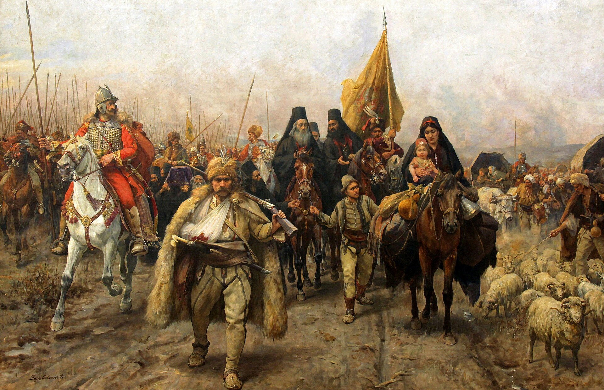

Slava
Each family honours its own patron saint with a slava, a feast day of bread, candles, wine and open doors for guests. In 2014 UNESCO recognised it as Intangible Cultural Heritage.

During the Great Turkish War, Serbs rose up in support of the Habsburg army against the Ottoman Empire. When the Habsburg advance collapsed, tens of thousands of Serbs, led by Patriarch Arsenije III Čarnojević, fled north across the Sava and Danube rivers to escape reprisals.
They settled in Habsburg lands, in what is now Vojvodina and Hungary, founding communities that preserved Serbian Orthodox faith, language and culture for centuries.
Two centuries later, the painter Paja Jovanović captured the exodus in his famous canvas The Migration of the Serbs, which remains one of the best-known images in Serbian art.
Samo sloga Srbina spasava.
Many customs passed down through generations are still part of everyday life in Serbia.
Each family honours its own patron saint with a slava, a feast day of bread, candles, wine and open doors for guests. In 2014 UNESCO recognised it as Intangible Cultural Heritage.
A circle dance performed hand in hand to accordion and folk music. You'll see it at weddings, festivals and celebrations across the country.
Guests are welcomed with slatko, a spoonful of fruit preserve, followed by a glass of water and often a cup of strong domestic coffee.
| Category | Detail |
|---|---|
| Capital | Belgrade (Beograd) |
| Official language | Serbian |
| Scripts | Cyrillic (official) and Latin |
| Population | About 6.6 million (2022 census) |
| Currency | Serbian dinar (RSD) |
| Time zone | Central European Time (UTC+1) |
| Calling code | +381 |
| Largest cities | Belgrade, Novi Sad, Niš |